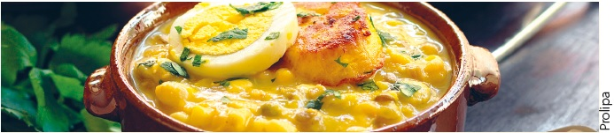
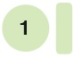
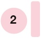
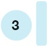
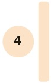

Exploro para recordar
Alumno:
Exploro para recordar
Alumno:
| Introducción | |
| Desarrollo | |
| Conclusiones |
|  | |
|  |
El tema de hoy es el patrimonio cultural alimentario. ¿Quién no ha disfrutado de un rico cebiche o de una fritada con mote? |
|  |
El patrimonio alimentario se refiere a todos aquellos productos, técnicas y recetas que se utilizan para elaborar platos o bebidas tradicionales. |
|  |
Son parte del patrimonio cultural alimentario los productos nativos con los que se prepara la comida, por ejemplo, la quinua, el maíz, el maní y la yuca. |
|  |
Detrás de cada comida considerada como plato típico existe una historia relacionada con sus recetas; por eso, el patrimonio cultural alimentario comprende la preparación, el conocimiento, las técnicas y la tradición —transmitidos de generación en generación— para elaborar un plato. |
|
Conocer, valorar y difundir el patrimonio alimentario es una apuesta para fortalecer las identidades diversas de nuestro país. |
|
Ministerio de Cultura y Patrimonio (2013)."¿Qué es el patrimonio alimentario?"
|
¿Qué recurso se usó en la introducción para captar la atención del público?
¿Qué pistas te permitieron reconocer los párrafos de desarrollo?
| Mi tema: |